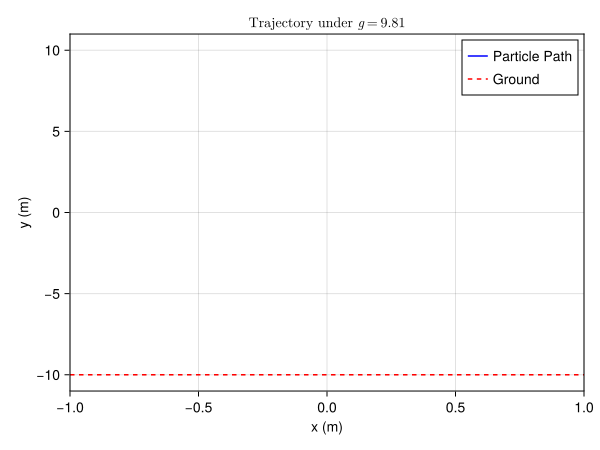
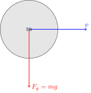

BallSim.jl
A high-performance, multi-threaded 2D and 3D physics engine written in Julia. Designed for massive particle simulations ($N > 10^6$) with a decoupled rendering pipeline capable of 8K visualizations.
Inspired by the work of Alexander Gustafsson
Features
- Performance: Structure-of-Arrays (SoA) data layout with multi-threaded physics kernels.
- Modular Architecture: Physics, Geometry, and Rendering are strictly decoupled.
- Declarative Configuration: Full simulation control via YAML files (solvers, fields, boundaries).
- "Darkroom" Rendering: Headless HDF5 export pipeline with a separate high-res rendering tool (supports Logarithmic Tone Mapping).
- Extensible: Easy interfaces for defining new Shapes, Force Fields, and Scenarios.
Installation
git clone https://github.com/benbrandt14/BallSim.jl
cd BallSim.jl
# Option 1: Quick Start (Installs Julia if needed, instantiates, and tests)
./setup.sh
# Option 2: Manual Setup
julia --project=. -e 'using Pkg; Pkg.instantiate()'Analytics & Verification
We use agent-based workflows to verify physics correctness directly in the documentation.
1. Physics Verification (Trajectory Analysis)
We simulate a single particle under gravity to verify the parabolic trajectory.
using BallSim
using CairoMakie
using StaticArrays
using LaTeXStrings
# Configure a minimal simulation
# We use a custom script approach since the high-level API writes to disk.
# Here we manually step the physics to capture data in memory.
# 1. Setup System
const T = Float32
const D = 2
N = 1
sys = BallSim.Common.BallSystem(N, D, T)
sys.data.pos[1] = SVector{D, T}(0.0, 10.0)
sys.data.vel[1] = SVector{D, T}(5.0, 0.0) # Horizontal launch
sys.data.mass[1] = 1.0
# 2. Setup Solver & Field
solver = BallSim.Physics.CCDSolver(T(0.01), T(0.8), 1) # dt=0.01, res=0.8
# Standard Gravity downwards
gravity = BallSim.Fields.UniformField(SVector{D, T}(0.0, -9.81))
# Simple box boundary
boundary = BallSim.Shapes.Box(T(20.0), T(20.0))
# 3. Run Simulation
steps = 100
trajectory_x = Float64[]
trajectory_y = Float64[]
for i in 1:steps
push!(trajectory_x, sys.data.pos[1][1])
push!(trajectory_y, sys.data.pos[1][2])
BallSim.Physics.step!(sys, solver, boundary, gravity)
end
# 4. Plot Results
fig = Figure()
ax = Axis(fig[1, 1], title = L"Trajectory under $g=9.81$", xlabel = "x (m)", ylabel = "y (m)")
lines!(ax, trajectory_x, trajectory_y, color = :blue, label = "Particle Path")
# Add ground line
hlines!(ax, [-10.0], color = :red, linestyle = :dash, label = "Ground")
axislegend(ax)
2. Force Diagram (Free Body Diagram)
A declarative vector diagram representing the forces on a ball.
using TikzPictures
using LaTeXStrings
# Create a TikZ diagram
tp = TikzPicture(L"""
\draw[fill=gray!20] (0,0) circle (1cm);
\draw[->, thick, red] (0,0) -- (0,-2) node[right] {$F_g = mg$};
\draw[->, thick, blue] (0,0) -- (2,0) node[above] {$v$};
\node at (0,0) {m};
""", options="scale=1.5")
Usage
1. Command Line
Run the simulation using the default config.yaml:
julia --project=. sim.jlOr specify a custom configuration file:
julia --project=. sim.jl my_config.yamlConfiguration Structure (config.yaml):
simulation:
type: Spiral
params:
N: 50000
duration: 10.0
dimensions: 3
physics:
dt: 0.002
solver: CCD
solver_params:
restitution: 0.5
substeps: 8
gravity:
type: Central
params:
strength: 20.0
mode: attractor
center: [0.0, 0.0, 0.0]
boundary:
type: Circle
params:
radius: 1.0
# Example 3D Box (Requires dimensions: 3)
# boundary:
# type: Box
# params:
# width: 10.0
# height: 10.0
# depth: 10.0
output:
mode: render
res: 800
fps: 60
filename: sandbox/simulation
projection: xy2. The Darkroom (High-Res Visualization)
Turn raw HDF5 data into art using the standalone renderer tool.
# Usage: julia tools/render_frame.jl <h5_file> <frame_index>
julia --project=. tools/render_frame.jl sandbox/data_123456.h5 10
- Output: A 4K (3840x2160) PNG with logarithmic tone mapping.
- Performance: Multi-threaded accumulation buffer; renders 1M particles in milliseconds.
3. ParaView Export (VTK)
Export simulations directly to .vtu (Unstructured Grid) or .vtp (PolyData) formats for analysis in ParaView.
Configuration: Set mode to "export" and use a filename with .vtu or .vtp extension.
output:
mode: export
filename: sandbox/simulation.vtu
fps: 60Features:
- Data Fields: Exports Position, Velocity, Mass, Active status, and Collision counts.
- Time Series: Generates a sequence of files (e.g.,
simulation_00001.vtu) automatically recognized by ParaView as a time series.
Extension Guide
BallSim is built on a "Plugin" architecture. You can extend it without modifying the core loop.
1. Adding a New Scenario
Create a struct that subtypes Common.AbstractScenario{D}.
# src/Scenarios.jl
struct GalaxyScenario <: Common.AbstractScenario{2}
N::Int
end
# A. Define Initial Conditions
function Scenarios.initialize!(sys::Common.BallSystem{2, T, S}, scen::GalaxyScenario) where {T, S}
# Initialize sys.data.pos and sys.data.vel here...
end
# B. Define Physics Rules (Solver Config)
function Common.get_default_solver(scen::GalaxyScenario)
return Physics.CCDSolver(0.001f0, 1.0f0, 8)
end
# C. Define Forces
function Common.get_force_field(scen::GalaxyScenario)
# Combine Gravity and Drag
g = Fields.CentralField(SVector(0f0, 0f0), 100.0f0)
d = Fields.ViscousDrag(0.1f0)
return Fields.CombinedField((g, d))
end
2. Adding a New Shape
Create a struct that subtypes Common.AbstractBoundary{D}.
# src/Shapes.jl
struct Triangle <: Common.AbstractBoundary{2}
p1::SVector{2, Float32}
p2::SVector{2, Float32}
p3::SVector{2, Float32}
end
# A. Signed Distance Function
function Common.sdf(b::Triangle, p::SVector{2}, t)
# Return distance (Negative = Inside, Positive = Outside)
end
# B. Normal Vector
function Common.normal(b::Triangle, p::SVector{2}, t)
# Return normalized vector pointing OUT of the shape
end
3. Adding a New Force Field
Create a struct that subtypes Fields.AbstractField.
# src/Fields.jl
struct MagneticField <: Fields.AbstractField
strength::Float32
end
# Implement the Functor
function (f::MagneticField)(p, v, t)
# Return Force Vector F = q(v x B) ...
return SVector(...)
end
Reference
BallSim.Common.BallSystem — Type
BallSystem{D, T, S}Physical state.
- D: Dimensions (2, 3)
- T: Precision (Float32, Float64)
- S: Storage Type (StructArray{...})
BallSim.Common.detect_collision — Method
detect_collision(boundary, p, t)Checks for collision and returns (collided, dist, normal).
- collided: Bool, true if penetration depth > 0
- dist: Float32, penetration depth (positive means collision)
- normal: SVector, direction to resolve collision (points into the obstacle / forbidden region)
Default implementation calls sdf and normal.
BallSim.Shapes.Inverted — Type
Inverted{D, B}Wraps another boundary B and inverts its logic. Used to trap particles INSIDE a shape (e.g., inside a Circle).
BallSim.Common.sdf — Method
sdf(b::Box3D, p::SVector{3}, t)Signed Distance Function for a 3D Box.
Example
julia> using BallSim, StaticArrays
julia> b = Shapes.Box3D(2.0f0, 2.0f0, 2.0f0);
julia> Common.sdf(b, SVector(0.0f0, 0.0f0, 0.0f0), 0.0f0)
-1.0f0
julia> Common.sdf(b, SVector(2.0f0, 0.0f0, 0.0f0), 0.0f0)
1.0f0BallSim.Common.sdf — Method
sdf(b::Circle, p::SVector{2}, t)Signed Distance Function for a 2D Circle. Returns negative if inside, positive if outside.
Example
julia> using BallSim, StaticArrays
julia> c = Shapes.Circle(1.0f0);
julia> Common.sdf(c, SVector(0.0f0, 0.0f0), 0.0f0)
-1.0f0
julia> Common.sdf(c, SVector(2.0f0, 0.0f0), 0.0f0)
1.0f0
julia> Common.sdf(c, SVector(1.0f0, 0.0f0), 0.0f0)
0.0f0BallSim.Physics.step! — Method
step!(sys, solver, boundary, gravity_func)The main physics loop. Updates particle positions and velocities based on:
- Gravity / Force Fields
- Explicit Euler Integration
- Continuous Collision Detection (approximate via substeps) with the Boundary.
Arguments
sys: TheBallSystemcontaining particle data.solver: TheCCDSolverconfiguration (dt, restitution, substeps).boundary: The geometric boundary (e.g., Circle, Box).gravity_func: A callablef(p, v, m, t)returning force vector.
Example
julia> using BallSim, StaticArrays
julia> sys = Common.BallSystem(1, 2); # 1 particle, 2D
julia> sys.data.pos[1] = SVector(0.0f0, 0.0f0);
julia> sys.data.vel[1] = SVector(1.0f0, 0.0f0);
julia> sys.data.active[1] = true;
julia> solver = Physics.CCDSolver(0.1f0, 1.0f0, 1);
julia> boundary = Shapes.Circle(10.0f0);
julia> gravity = (p, v, m, t) -> SVector(0.0f0, -9.8f0); # Simple gravity
julia> Physics.step!(sys, solver, boundary, gravity);
julia> sys.t ≈ 0.1f0
true
julia> sys.data.pos[1][2] < 0.0f0 # Moved down due to gravity
trueBallSim.SimIO.load_frame! — Method
load_frame!(sys::BallSystem, file::HDF5.File, index::Int)Overwrites sys with data from the file.
BallSim.SimIO.save_frame — Method
save_frame(file::HDF5.File, index::Int, sys::BallSystem)Saves the current state to the HDF5 group /frame_{index}. Saves generic SVector components (x, y...) as separate arrays.
BallSim.SimIO.save_vtk — Method
save_vtk(prefix::String, index::Int, sys::BallSystem)Saves the current state to a VTK file (UnstructuredGrid .vtu by default).
BallSim.Fields.UniformField — Type
UniformField{D, T}A constant force field (e.g., gravity) applied uniformly to all particles. F = m * vector
Example
julia> using BallSim, StaticArrays
julia> g = Fields.UniformField(SVector(0.0f0, -9.8f0));
julia> g(SVector(0f0,0f0), SVector(0f0,0f0), 1.0f0, 0.0f0) == SVector(0.0f0, -9.8f0)
trueBallSim.Fields.VortexField — Type
VortexField{D, T}A force field that applies a tangential force around a center. F = (strength / r^2) * tangent_vector
Example
julia> using BallSim, StaticArrays
julia> v = Fields.VortexField(SVector(0.0f0, 0.0f0), 1.0f0);
julia> v(SVector(1.0f0, 0.0f0), SVector(0f0,0f0), 1.0f0, 0.0f0)
2-element SVector{2, Float32} with indices SOneTo(2):
-0.0
1.0BallSim.Vis.compute_frame! — Method
compute_frame!(grid, sys, limit, u, v, cfg)Computes the visualization frame based on config. Projects 3D particles if necessary.